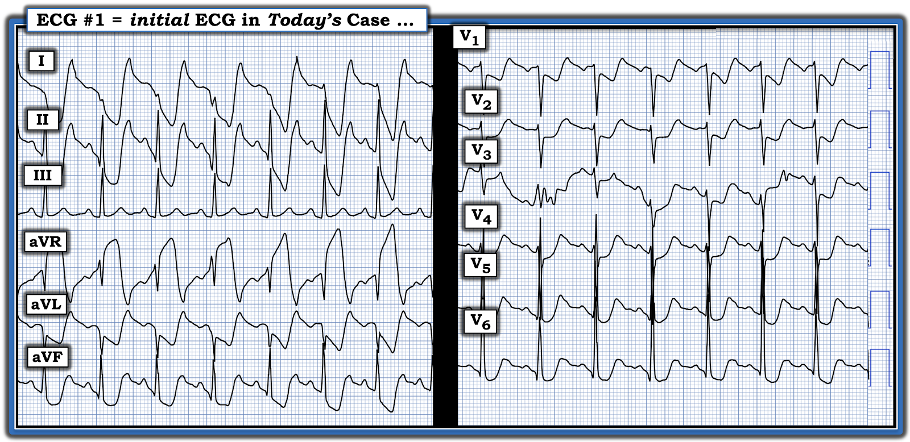
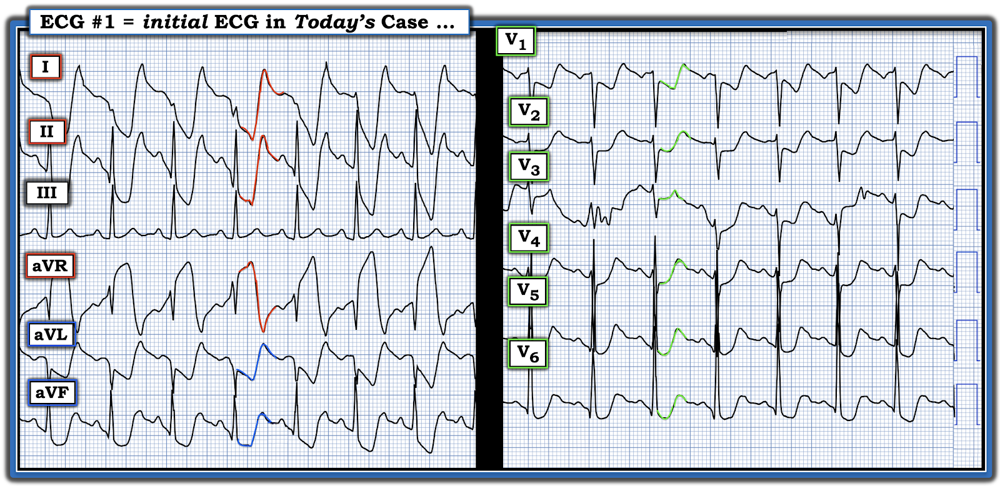
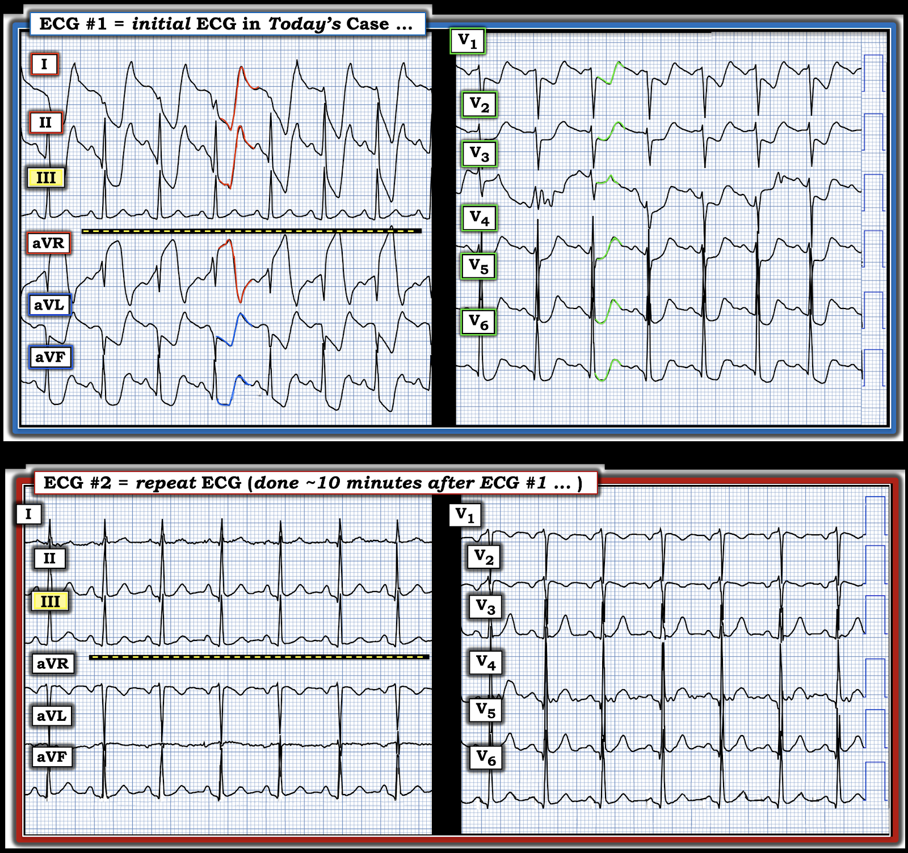
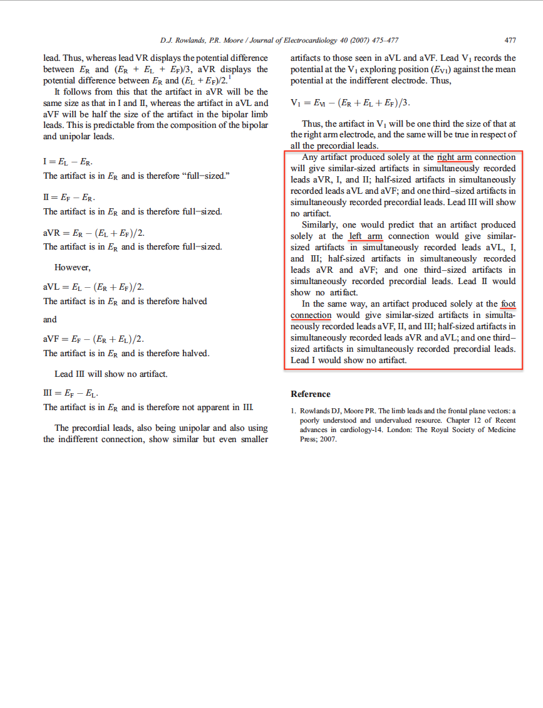

ECG Blog #490 — Chuyển đạo nào tiết lộ nhiều nhất?
Điện tâm đồ ở Hình-1 là của một phụ nữ trẻ tuổi có tiền sử đái tháo đường, đến khoa cấp cứu (Emergency Department) vì một cơn ngất (syncopal episode). Bệnh nhân tỉnh táo, không đau ngực và ổn định huyết động vào thời điểm ghi điện tâm đồ #1.
CÂU HỎI:
- Bạn diễn giải điện tâm đồ ở Hình-1 như thế nào?
- Cơn ngất có khả năng là nguyên nhân gây ra các bất thường trên điện tâm đồ-1 không — HAY — Có nên kích hoạt phòng thông tim (cath lab) không?


Suy nghĩ của tôi về ca hôm nay:
Đúng là các biến cố thảm họa thần kinh trung ương (CNS Catastrophes) có thể gây ra một số dấu hiệu điện tâm đồ bất thường nhất (Xem Goldberger và cs. — J Electrocard 47(1):80-83, 2013) — nhưng cơn ngất của bệnh nhân này (dù do bất kỳ căn nguyên nào gây ra) không phải là nguyên nhân của các thay đổi ST-T lan tỏa và rầm rộ mà chúng ta thấy trên điện tâm đồ #1:
- Dù sự chồng lấp đáng kể giữa các phức bộ QRS ở một số chuyển đạo trong Hình-1 làm việc đánh giá độ lệch ST-T trở nên khó khăn — hẳn là có thể thấy rõ có ST chênh lên rầm rộ ở chuyển đạo aVR, cùng với ST chênh xuống cũng "đập vào mắt" không kém ở các chuyển đạo chi khác — và ST chênh xuống ít hơn (nhưng vẫn đáng kể) ở tất cả các chuyển đạo trước tim.
ĐIỂM THEN CHỐT (PEARL) #1: BẠN có để ý rằng từng phức bộ trong 7 phức bộ QRST ở chuyển đạo III đều trông bình thường không? (Xem Hình-2). Cần nhận biết rằng khi dường như có những biến dạng ST-T rầm rộ (dù trông kỳ dị) ở 2 trong 3 chuyển đạo chi (tức là các chuyển đạo I, II, III) chuẩn — nhưng chuyển đạo chi chuẩn thứ 3 lại "không bị ảnh hưởng" bởi hình thái ST-T kỳ dị này — thì nguyên nhân của những biến dạng ST-T kỳ dị đó thường là nhiễu (artifact).
- Chúng ta có thể khẳng định chắc chắn hơn rằng nhiễu là nguyên nhân của những thay đổi ST-T rầm rộ (kỳ dị) này, do "một điều gì đó" xảy ra ở 1 trong 4 chi của bệnh nhân — NẾU kích thước tương đối của các biến dạng bất thường này tuân theo các định luật Einthoven (Xem bên dưới).
ĐIỂM THEN CHỐT (PEARL) #2: Nhiễu thường gặp trong thực hành lâm sàng. Cách TỐT NHẤT để không bỏ sót nhiễu — là ý thức được nó thực sự xảy ra thường xuyên đến mức nào! Tôi xin gợi ý các MANH MỐI sau đây liên quan đến sự hiện diện của nhiễu trong ca hôm nay:
- Manh mối #1: Đã được nêu trong ĐIỂM THEN CHỐT #1 — cụ thể là dù có độ lệch ST-T bất thường ở 2 trong 3 chuyển đạo chuẩn — chuyển đạo chuẩn thứ 3 lại không bị ảnh hưởng! (và chuyển đạo III không bị nhiễu trong Hình-2! ).
- Manh mối #2: Hình dạng của các đoạn ST bất thường rất kỳ dị. Hình dạng bất thường này không “khớp” với bối cảnh lâm sàng. Dù bệnh nhân hôm nay có đái tháo đường — cô ấy trẻ hơn thường lệ để có một biến cố tim cấp — và không có tiền sử đau ngực (tức là ngất không kèm đau ngực không phải là biểu hiện thường gặp của nhồi máu cơ tim cấp). Cuối cùng — khó mà tưởng tượng được sẽ có mức độ lệch ST-T như thế này do nhồi máu cơ tim cấp ở một người trẻ ổn định huyết động, đến viện vì ngất nhưng không đau ngực (và cũng khó tưởng tượng sẽ có mức độ lệch ST-T như thế này do một biến cố thảm họa thần kinh trung ương ở một bệnh nhân tỉnh táo, ổn định huyết động).
- Manh mối #3: Hình dạng ST-T kỳ dị ở các chuyển đạo có ST chênh xuống (và cả ở chuyển đạo aVR có ST chênh lên) — xuất hiện ở một khoảng cố định so với phức bộ QRS đi trước (Hình-2). Điều này cho biết bất cứ thứ gì tạo ra các biến dạng này đều phải liên quan đến sự co bóp của tim (và/hoặc với động mạch đập).


Manh mối MẤU CHỐT #4: Trong Hình-2, chúng ta có thể thấy sự phân bố các biến dạng ST-T tuân theo chính xác vị trí và mức độ méo biên độ tương đối mà tam giác Einthoven dự đoán.
- Mức độ méo ST-T xấp xỉ bằng nhau ở 2 trong các chuyển đạo chi (tức là chuyển đạo I và II) — và hoàn toàn không thấy ở chuyển đạo chi thứ 3 (tức là không thấy nhiễu ở chuyển đạo III). Theo tam giác Einthoven (Xem hình tam giác Einthoven bên dưới, cạnh đường link tới ECG Media Pearl của hôm nay) — việc thấy nhiễu biên độ đoạn ST bằng nhau ở chuyển đạo I và chuyển đạo II giúp khu trú chi “thủ phạm” vào điện cực RA ( = Right Arm, tay phải).
- Việc không có bất kỳ nhiễu nào ở chuyển đạo III phù hợp với điều này — bởi vì chuyển đạo chi lưỡng cực chuẩn III được tạo ra từ hiệu điện thế giữa điện cực LL ( = Left Leg, chân trái) và LA ( = Left Arm, tay trái), vốn sẽ không bị ảnh hưởng nếu nguồn gây nhiễu là tay phải.
- Như tôi bàn chi tiết trong MP-18 Audio Pearl bên dưới — việc thấy nhiễu có biên độ lớn nhất ở chuyển đạo aVR đơn cực xác nhận rằng tay phải là chi “thủ phạm”.
Bấm vào hình này để nghe Audio Pearl!

ECG Media PEARL #18 (7:45 phút Audio) — Về nhận biết nhiễu — và — sử dụng tam giác Einthoven để xác định trong vòng vài giây chi “thủ phạm” gây ra nhiễu trên điện tâm đồ của bạn.

===============================
Ca bệnh tiếp diễn:
Một lúc sau — điện tâm đồ được ghi lại (Xem Hình-3).
- CÂU HỎI: Bạn giải thích thế nào về sự thay đổi hình ảnh mà chúng ta thấy trong Hình-3 giữa điện tâm đồ #1 và điện tâm đồ #2 ghi lại khoảng ~10 phút sau?


===============================
TRẢ LỜI: Các độ lệch ST-T rầm rộ mà chúng ta thấy trên điện tâm đồ #1 — nay đã biến mất hoàn toàn trên điện tâm đồ #2! Ngoài nhịp nhanh xoang và một ít nhiễu đường nền ở vài chuyển đạo — điện tâm đồ ghi lại này không có gì đáng chú ý.
- Đặc biệt lưu ý rằng chuyển đạo III không thay đổi trên điện tâm đồ ghi lại so với bản ghi ban đầu!
- Điểm MẤU CHỐT: Chính sự biến mất hoàn toàn của các biến dạng ST-T bất thường từng thấy trên điện tâm đồ #1 — đã xác nhận rằng các biến dạng thấy trên điện tâm đồ #1 là kết quả của nhiễu do điện cực RA tiếp xúc với một động mạch đang đập (đôi khi được gọi là "PTA" = nhiễu do mạch đập (Pulse-Tap Artifact)).
-------------------------------------------------------------------------
Lời cảm ơn: Xin cảm ơn Tayfun Dilek Demir (ở Antalya, Thổ Nhĩ Kỳ) đã cung cấp các bản ghi và ca bệnh này.
-------------------------------------------------------------------------
==================================
PHẦN BỔ SUNG (ngày 2 tháng 8 năm 2025):
- Để có Thêm tài liệu — tôi đã thêm Thẻ (Tab) về Đảo điện cực & Nhiễu này — vào Menu ở đầu mỗi trang của ECG Blog này:

Tình trạng đảo điện cực, nhiễu không được nghi ngờ và các "sự cố kỹ thuật" khác thường xuyên bị bỏ sót — dẫn đến những hệ quả sai lầm về chẩn đoán và điều trị.
- Với hy vọng giúp nhận biết những ca như vậy dễ hơn — tôi đang xây dựng một danh sách cập nhật liên tục trên trang này với các LINK tới những ví dụ tôi đã đăng trong ECG Blog này, cũng như trong Dr. Smith’s ECG Blog, nơi tôi thường viết bình luận.
===================================
LƯU Ý: Dưới đây tôi in lại trong Hình 4, 5 và 6 — bài báo 3 trang của Rowlands và Moore (J. Electrocardiology 40: 475-477, 2007) — đây là bài tổng quan HAY NHẤT mà tôi từng đọc về cơ chế sinh lý giải thích kích thước tương đối của biên độ các biến dạng nhiễu khi nguyên nhân gây nhiễu là một chi đơn lẻ. Các nguyên lý này được minh họa bằng các biến dạng tô màu trong Hình-3:
- Như được nêu qua các phương trình ở trang 477 trong bài báo của Rowlands và Moore: i) Biên độ nhiễu lớn nhất ở điện cực tăng thế đơn cực của chi “thủ phạm” — đó là chuyển đạo aVR trong Hình-3 (viền ĐỎ của đoạn ST chênh lên ở chuyển đạo này); và, ii) Biên độ nhiễu ở 2 chuyển đạo tăng thế còn lại (tức là chuyển đạo aVL và aVF) vào khoảng 1/2 biên độ nhiễu ở chuyển đạo aVR (viền XANH DƯƠNG của đoạn ST chênh xuống rõ ở chuyển đạo aVL và aVF).
- Tương tự — biên độ các biến dạng nhiễu ở 6 chuyển đạo trước tim đơn cực trong Hình-3 cũng giảm đáng kể so với biên độ tối đa thấy ở các chuyển đạo I, II và aVR (viền XANH LÁ của đoạn ST chênh xuống thấy ở mỗi chuyển đạo trong 6 chuyển đạo trước tim).
ĐIỀU CỐT LÕI: Bạn sẽ gặp nhiễu thường xuyên trong thực hành thực tế. Chỉ cần luyện tập một chút, bạn có thể ngay lập tức BIẾT chắc chắn 100% rằng những biến dạng kỳ dị trên một bản ghi như bản ghi này là kết quả của nhiễu, và liên quan đến nhịp đập động mạch ở một trong các chi.
- Không có gì khác cho thấy mối liên hệ cố định với phức bộ QRS theo các quan hệ toán học mô tả ở trên, trong đó biến dạng nhiễu lớn nhất bằng nhau ở 2 trong 3 chuyển đạo chi (và hoàn toàn không có nhiễu ở chuyển đạo chi thứ 3) — trong đó nhiễu lớn nhất ở chuyển đạo tăng thế đơn cực sẽ thấy ở điện cực chi chung cho cả 2 chuyển đạo chi có nhiễu lớn nhất (theo tam giác Einthoven).
- Nói cách khác: Khi nhiễu bắt nguồn từ một chi đơn lẻ — mức độ nhiễu tương đối sẽ là:
- Lớn nhất ở 2 trong 3 chuyển đạo chi chuẩn.
- Không có ở chuyển đạo chi chuẩn thứ 3 — và ...
- Lớn nhất ở điện cực tăng thế đơn cực của chi “thủ phạm“ (mà theo viền ĐỎ trong Hình-3 — là chuyển đạo aVR).
- ĐIỂM THEN CHỐT (PEARL) #3: Nắm vững các nguyên lý điện sinh lý này đã giúp tôi ngay lập tức xác định chuyển đạo aVR là chi “thủ phạm” trong ca hôm nay — vì đây là chuyển đạo tăng thế có nhiễu lớn nhất!


